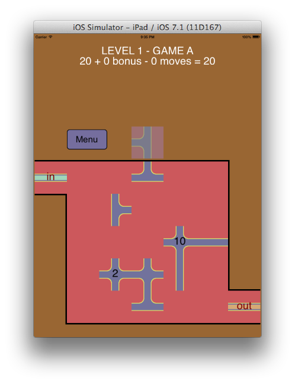
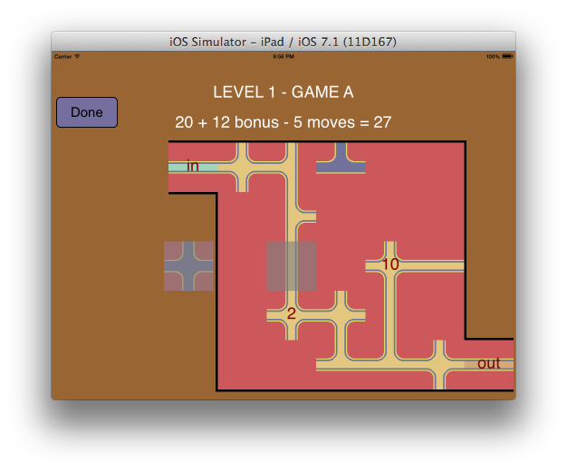
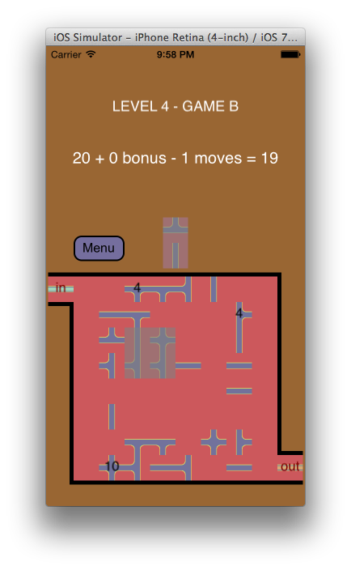

I'm a professionnal software engineer and develop mobile apps and games just for the fun of it.
I've been programming in many fields and languages, including for a major game development company.
Labysol is a game where you need to complete a path out of a maze, using the tiles that show up at the top.
The less tiles you use, the more points you get.
You position the tiles by moving them with your finger. You can put them in an empty space on the maze, but you can as well cover an existing tile.
You can change your mind and move your tile to a new position, as long as you've not touch the next tile. If a tile is not useful, put it anywhere, including outside of the maze if you wish. This will count as a move, lowering you score.
When you have a path from the IN to the OUT, just press DONE to get your score on the score board. But you can also use some extra tiles to try to have your path reach more bonus tiles, thus increasing your score.
Labysol is available for iPad & iPhone on the App Store.
This is how the game looks on iPad:
 
And this is the game on iPhone:
